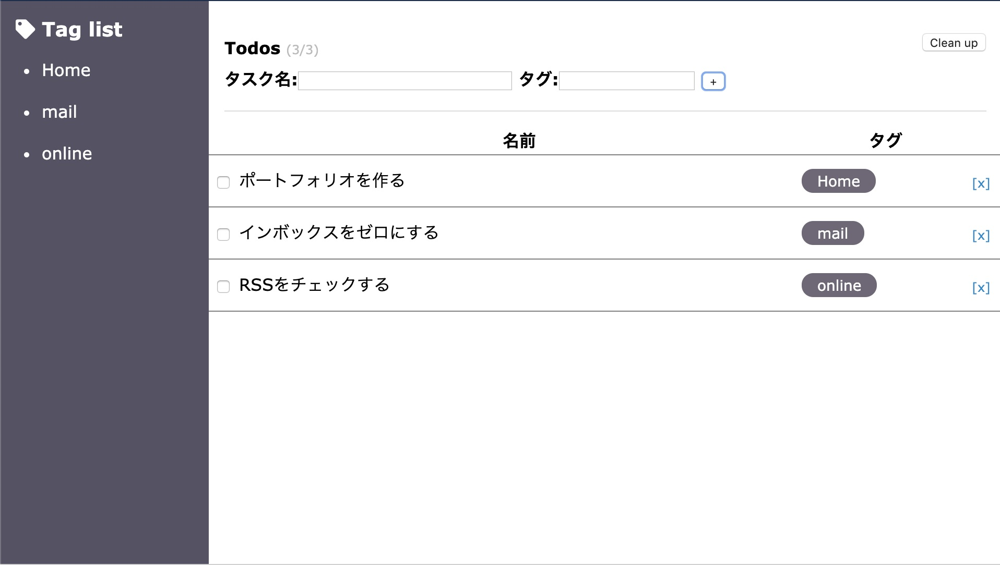
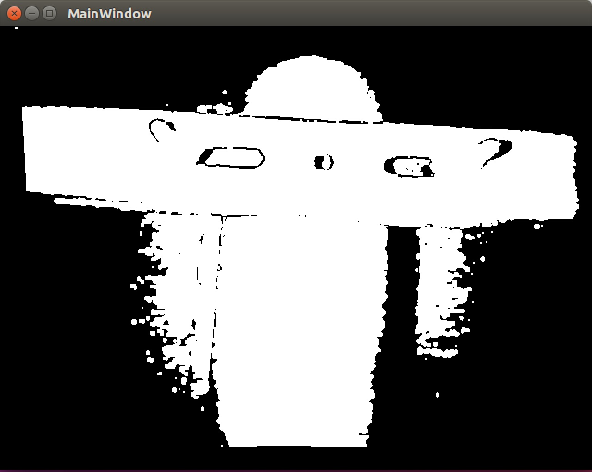

Works
今まで携わった活動・制作物をまとめました。

ポートフォリオ
自分自身のポートフォリオです

Vue Task App
Vue.jsを用いたタスクアプリ

PCD Viewer
PCD（Point Cloud Date）ファイルビューワー
電気電子工学の大学にてロボット工学の研究室に所属し、プログラミングによるCG描画システムの開発を3年間行い、IT業界へ興味を持つ。
新卒で大手通信会社に就職し、音声系のSEとして提案支援・プロジェクト管理業務に従事するも、
手を動かものづくりを行う仕事にチャレンジしたいと考え、キャリアチェンジを決意。
現在は独学にてプログラミング学習を行いながら転職活動を行っている。
今まで携わった活動・制作物をまとめました。
自分自身のポートフォリオです
Vue.jsを用いたタスクアプリ
PCD（Point Cloud Date）ファイルビューワー
ar.shiihata@gmail.com